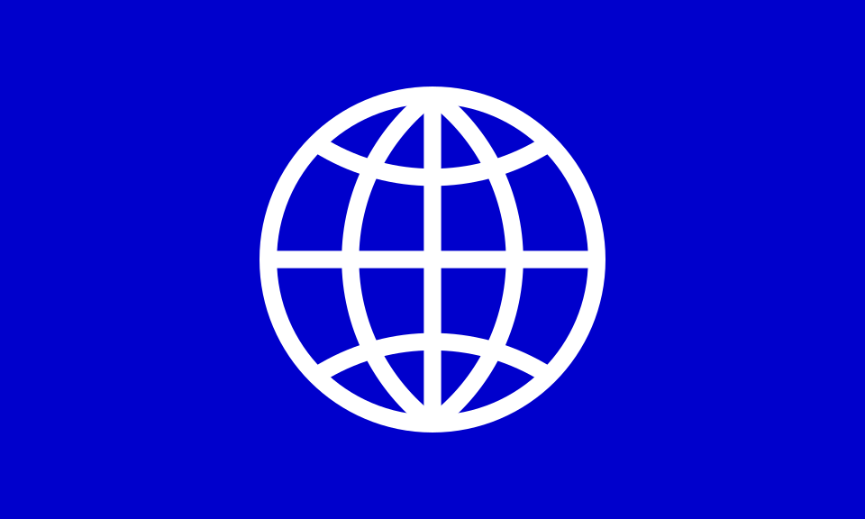
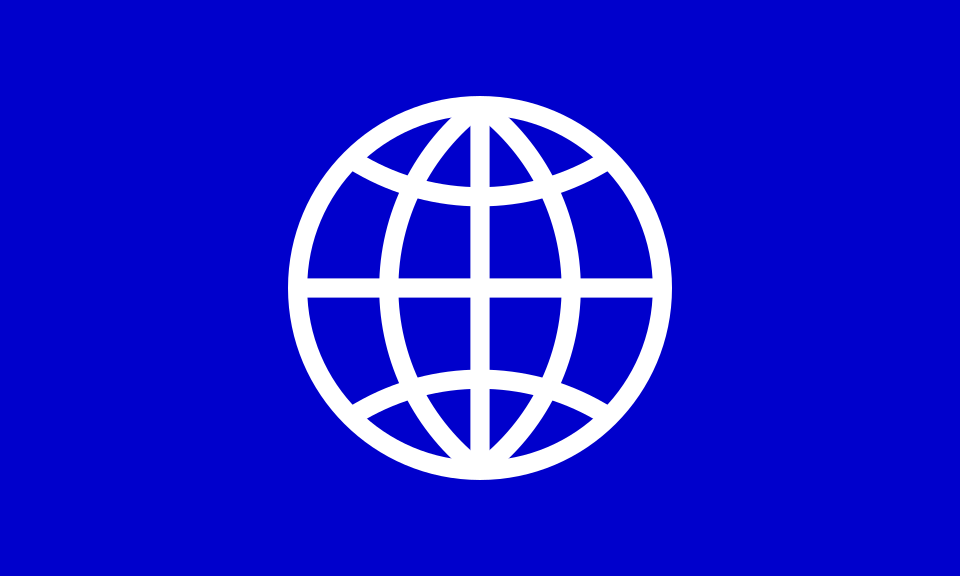
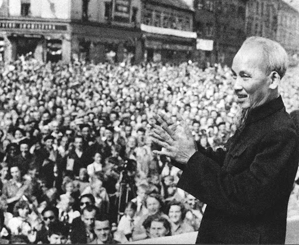
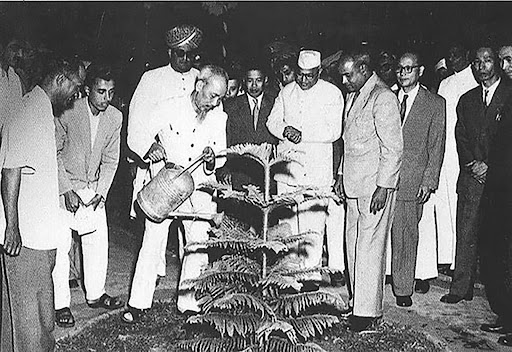

CÔNG LAO CỦA HỒ CHÍ MINH

 

Công lao của lãnh tụ Nguyễn Ái Quốc – Hồ Chí Minh đối với quá trình thành lập Đảng Cộng sản Việt Nam
Đảng Cộng sản Việt Nam thành lập đã khẳng định dứt khoát nội dung, phương hướng phát triển của xã hội Việt Nam là gắn liền độc lập dân tộc với chủ nghĩa xã hội, chấm dứt sự khủng hoảng bế tắc về đường lối cứu nước của dân tộc ta trong nhiều thập kỉ. Sự lựa chọn con đường xã hội chủ nghĩa là phù hợp với nội dung và xu thế cách mạng của thời đại mới được mở ra từ Cách mạng tháng Mười Nga vĩ đại: "Đối với nước ta, không còn con đường nào khác để có độc lập dân tộc thật sự và tự do, hạnh phúc cho nhân dân”(1). Sự kiện thành lập Đảng Cộng sản Việt Nam là một bước ngoặt quyết định trong sự phát triển của dân tộc ta, tạo những tiền đề và nhân tố hàng đầu quyết định đưa cách mạng Việt Nam đi từ thắng lợi này đến thắng lợi khác.
Sự ra đời của Đảng Cộng sản Việt Nam là sản phẩm của sự kết hợp chủ nghĩa Mác-Lênin, tư tưởng Hồ Chí Minh với phong trào công nhân và phong trào yêu nước Việt Nam. Đó là sự phản ánh quy luật ra đời và cội nguồn sức mạnh của Đảng Cộng sản Việt Nam. Đồng thời là sự vận dụng sáng tạo chủ nghĩa Mác – Lê nin vào đặc điểm của Việt Nam và là công lao to lớn của lãnh tụ Nguyễn Ái Quốc – Hồ Chí Minh trong công cuộc vận động thành lập một chính đảng vô sản ở Việt Nam - một nước thuộc địa nửa phong kiến.
1.1. Sự lựa chọn con đường cách mạng vô sản
Công lao đầu tiên của lãnh tụ Nguyễn Ái Quốc – Hồ Chí Minh đối với quá trình vận động thành lập Đảng là sự lựa chọn con đường cách mạng cho dân tộc Việt Nam- con đường cách mạng vô sản. Con đường duy nhất đúng để giải phóng dân tộc, giải phóng giai cấp và giải phóng con người. Sự lựa chọn con đường cách mạng vô sản phù hợp với nội dung và xu thế của thời đại mới được mở ra từ Cách mạng tháng Mười Nga vĩ đại: "Đối với nước ta, không còn con đường nào khác để có độc lập dân tộc thật sự và tự do, hạnh phúc cho nhân dân. Cần nhấn mạnh rằng đây là sự lựa chọn của chính lịch sử, sự lựa chọn đã dứt khoát từ năm 1930 với sự ra đời của Đảng ta”(3).
1.2. Truyền bá chủ nghĩa Mác - Lênin
Công lao thứ hai là lãnh tụ Nguyễn Ái Quốc – Hồ Chí Minh đã linh hoạt, sáng tạo trong phương thức truyền bá chủ nghĩa Mác - Lênin vào phong trào công nhân Việt Nam khi mà giai cấp công nhân lúc đó chỉ chiếm trên 1% dân số, khi mà công nhân Việt Nam không chỉ phải chịu sự áp bức, bóc lột của thực dân và giai cấp tư sản mà còn chịu sự kìm kẹp hà khắc của phong kiến phản động. Trong bối cảnh lịch sử ấy, chủ nghĩa Mác- Lênin không thể truyền bá trực tiếp vào phong trào công nhân như ở các nước tư bản phát triển (chủ nghĩa Mác – Lênin kết hợp với phong trào công nhân ra đời chính đảng cộng sản). Nguyễn Ái Quốc, hơn ai hết, là người đã hiểu sâu sắc đặc điểm của xã hội Việt Nam, chủ trương sáng lập Hội Việt Nam Cách mạng thanh niên – một tổ chức tập hợp những thanh niên yêu nước, có khát vọng đi tìm con đường cách mạng để cứu nước, giải phóng dân tộc. Để từ đó Hội Việt Nam Cách mạng thanh niên chính là cầu nối – chuyển tải lý luận cách mạng vô sản đến với cách mạng Việt Nam. Sự phát triển rộng rãi các mạng lưới của Hội Việt Nam Cách mạng thanh niên ở trong nước, đặc biệt với kết quả của phong trào vô sản hóa năm 1928-1929, các tổ chức cộng sản đã xuất hiện ở trên cả ba miền của Việt Nam, đưa phong trào yêu nước Việt Nam bước vào quỹ đạo cách mạng vô sản thế giới, góp phần thúc đẩy bánh xe của lịch sử phong trào giải phóng dân tộc hòa chung với dòng chảy của cách mạng thế giới. Chính vì lẽ đó, trong tác phẩm “Thế giới ca ngợi và thương tiếc Hồ Chủ tịch” đã viết về lãnh tụ Nguyễn Ái Quốc – Hồ Chí Minh như sau: “Con người đó đã đóng một vai trò lịch sử vô cùng to lớn trong vòng hơn 50 năm nay. Người đã làm lay chuyển hệ thống thực dân. Người đã góp phần biến đổi bản đồ thế giới. Người đã đẩy bánh xe lịch sử theo hướng tiến bộ. Cả ba đặc điểm đó, thể hiện khái quát một trong những đường lối chiến đấu hoàn hảo nhất của thời đại chúng ta”(4)
1.3. Kịp thời giải quyết yêu cầu cấp bách của cách mạng
Công lao thứ ba là khi các tổ chức cộng sản ra đời ở ba miền, xuất hiện tình trạng phân tán, chia rẽ lực lượng cách mạng Việt Nam, trước tình hình “hai nhóm cộng sản sử dụng nhiều – nếu không nói là tất cả - nghị lực và thời gian trong cuộc đấu tranh nội bộ và bè phái”(5), với tinh thần chủ động, sáng tạo và uy tín chính trị, lãnh tụ Nguyễn Ái Quốc đã kịp thời giải quyết yêu cầu cấp bách của cách mạng Việt Nam. Việc Người hợp nhất các tổ chức cộng sản là sáng kiến tối ưu trong tình hình lúc bấy giờ vì các tổ chức này đều vì mục đích giải phóng dân tộc và giải phóng giai cấp, đều khẳng định đi theo con đường cách mạng vô sản. Trong tác phẩm Sơ thảo lịch sử phong trào cộng sản ở Đông Dương, được công bố năm 1933, tác giả Hồng Thế Công (Hà Huy Tập) đã khẳng định cống hiến của lãnh tụ Nguyễn Ái Quốc đối với sự kiện thành lập Đảng:“Công lao to lớn của đồng chí là đã tập hợp được các lực lượng cộng sản phân tán lại thành một khối, nhờ đó mà đưa lại cho những người lao động Đông Dương một đội tiên phong chiến đấu và kiên quyết cách mạng” (6).
1.4. Soạn thảo Cương lĩnh chính trị đầu tiên
Công lao thứ tư của lãnh tụ Nguyễn Ái Quốc - Hồ Chí Minh là đã soạn thảo Cương lĩnh chính trị đầu tiên được thông qua tại Hội nghị thành lập Đảng. Các văn kiện đó có ý nghĩa soi đường cho cách mạng Việt Nam vượt qua khủng hoảng bế tắc về đường lối cứu nước. Đảng Cộng sản Việt Nam đã tạo nên bước ngoặt quan trọng trong lịch sử cách mạng Việt Nam: chấm dứt sự khủng hoảng về đường lối cứu nước và tổ chức lãnh đạo phong trào yêu nước Việt Nam đầu thế kỷ XX. Đảng Cộng sản Việt Nam ra đời đã đáp ứng khát vọng giải phóng dân tộc của nhân dân Việt Nam lãnh đạo nhân dân ta tiến hành cuộc đấu tranh cách mạng lâu dài, gian khổ, vượt qua muôn vàn khó khăn, thử thách và giành được những thắng lợi vĩ đại: Thắng lợi của Cách mạng Tháng Tám năm 1945, đập tan ách thống trị của thực dân, phong kiến, lập nên nước Việt Nam Dân chủ Cộng hoà, đưa dân tộc ta tiến vào kỷ nguyên độc lập, tự do; thắng lợi của các cuộc kháng chiến chống xâm lược, mà đỉnh cao là chiến thắng lịch sử Điện Biên Phủ năm 1954, đại thắng mùa Xuân năm 1975, giải phóng dân tộc, thống nhất đất nước, bảo vệ Tổ quốc, làm tròn nghĩa vụ quốc tế; thắng lợi của công cuộc đổi mới, tiến hành công nghiệp hoá, hiện đại hoá và hội nhập quốc tế, tiếp tục đưa đất nước từng bước quá độ lên chủ nghĩa xã hội với nhận thức và tư duy mới đúng đắn, phù hợp thực tiễn Việt Nam”(7). Những thắng lợi vĩ đại ấy đã khẳng định trên thực tế đường lối đúng đắn, năng lực và hiệu quả lãnh đạo của Đảng Cộng sản Việt Nam, là một mốc son chói lọi trên con đường cách mạng do Nguyễn Ái Quốc – Hồ Chí Minh đã hoạch định từ năm 1930, là nền tảng vững chắc cho dân tộc Việt Nam tiếp nối trên con đường độc lập dân tộc gắn liền với chủ nghĩa xã hội.
1.5. Thành tựu
Kiên định mục tiêu độc lập dân tộc gắn liền với chủ nghĩa xã hội theo mong muốn của Người, từ ngày giải phóng miền Nam, thống nhất đất nước đến nay, trải qua 9 kỳ đại hội Đảng (từ Đại hội IV đến Đại hội XII), Đảng ta đã ngày càng xác định rõ hơn những quan điểm về chủ nghĩa xã hội và con đường đi lên chủ nghĩa xã hội ở Việt Nam. Đặc biệt, công cuộc đổi mới đất nước do Đảng khởi xướng và lãnh đạo tiến hành sau gần 34 năm đã đạt được những thành tựu to lớn và có ý nghĩa lịch sử. Đất nước ra khỏi khủng hoảng kinh tế - xã hội và tình trạng kinh tế kém phát triển, trở thành nước đang phát triển có thu nhập trung bình, đang đẩy mạnh công nghiệp hóa, hiện đại hóa và hội nhập quốc tế. Nền kinh tế thị trường định hướng xã hội chủ nghĩa từng bước hình thành và phát triển.
Tổng sản phẩm trong nước (GDP) tăng trưởng cao so với khu vực và trên thế giới. Chính trị - xã hội ổn định, quốc phòng, an ninh được tăng cường. Văn hóa - xã hội có bước phát triển, bộ mặt đất nước và đời sống nhân dân có nhiều thay đổi tích cực. Dân chủ xã hội chủ nghĩa ngày càng mở rộng. Đại đoàn kết toàn dân tộc không ngừng được phát huy. Sức mạnh về mọi mặt của đất nước được nâng lên; độc lập, chủ quyền, thống nhất, toàn vẹn lãnh thổ và chế độ xã hội chủ nghĩa được giữ vững. Quan hệ đối ngoại ngày càng mở rộng và đi vào chiều sâu; vị thế và uy tín của Việt Nam trên trường quốc tế không ngừng được nâng cao.
Thực hiện những điều căn dặn về xây dựng Đảng của Bác viết trong Di chúc, Đảng ta đã xác định xây dựng Đảng là nhiệm vụ then chốt trong mỗi giai đoạn cách mạng. Đảng ta luôn xác định tầm quan trọng của công tác xây dựng Đảng nhằm tăng cường sức mạnh và tính chiến đấu của Đảng, đáp ứng yêu cầu của sự nghiệp xây dựng và bảo vệ Tổ quốc. Việc đẩy mạnh công tác xây dựng Đảng đã được đặt ra trong nhiều nghị quyết, chỉ thị, kết luận, quy định của Đảng.
Trong đó tập trung các biện pháp về xây dựng Đảng, củng cố, kiện toàn và làm trong sạch bộ máy nhà nước, đẩy mạnh công tác tự phê bình và phê bình trong toàn Đảng, củng cố sự đoàn kết, thống nhất trong Đảng, nhằm xây dựng Đảng ta vững mạnh về chính trị, tư tưởng, tổ chức và đạo đức; khắc phục những yếu kém trong bộ máy các tổ chức Đảng và Nhà nước. Đặc biệt, Đảng ta hết sức chú trọng cuộc đấu tranh phòng, chống tham nhũng, tiêu cực mà Đảng đã xác định là giặc “nội xâm”.
Có thể nói, chưa bao giờ cuộc đấu tranh trên lĩnh vực này được Đảng, Nhà nước tiến hành quyết liệt và đạt được những kết quả quan trọng như thời gian qua. Như đồng chí Tổng Bí thư, Chủ tịch nước Nguyễn Phú Trọng đã nêu rõ: “Cuộc đấu tranh này không có vùng cấm, không có ngoại lệ, không ngừng nghỉ”.
Cùng với kiên định mục tiêu xã hội chủ nghĩa, Đảng ta luôn khẳng định lấy chủ nghĩa Mác - Lênin và tư tưởng Hồ Chí Minh làm nền tảng tư tưởng, kim chỉ nam cho hành động, đẩy mạnh tuyên truyền, giáo dục trong Đảng và trong toàn xã hội để chủ nghĩa Mác - Lênin và tư tưởng Hồ Chí Minh trở thành tư tưởng chính trị chủ đạo trong đời sống đất nước.
Từ những cống hiến vĩ đại của Chủ tịch Hồ Chí Minh đối với sự nghiệp cách mạng của Đảng và dân tộc, chúng ta tin tưởng rằng, tư tưởng, đạo đức, phong cách của Người là tài sản vô giá của toàn Đảng, toàn dân và toàn quân ta, mãi mãi là niềm tự hào, nguồn cổ vũ to lớn đối với các thế hệ người Việt Nam hôm nay và mai sau, là ánh sáng soi đường cho cách mạng Việt Nam đạt được những kỳ tích vẻ vang hơn nữa để đưa dân tộc đi tới tương lai tươi sáng.
Như vậy có thể thấy rằng, công lao của lãnh tụ Nguyễn Ái Quốc – Hồ Chí Minh trong quá trình sáng lập và rèn luyện Đảng ta là hết sức to lớn. Hơn 90 năm qua, dưới sự lãnh đạo của Đảng Cộng sản Việt Nam, đất nước ta đã đạt được rất nhiều những thành công to lớn. Đúng như Tổng Bí thư, Chủ tịch nước Nguyễn Phú Trọng đã khẳng định “Chưa bao giờ chúng ta có được cơ đồ, vị thế, tiềm lực và uy tín quốc tế như ngày nay”.
1.6. Lãnh đạo toàn dân Tổng khởi nghĩa tháng Tám
Trước tình hình phong trào cách mạng ở trong nước dâng cao, tháng giêng năm 1941, sau hơn 30 năm xa Tổ quốc, Nguyễn Ái Quốc trở về nước trực tiếp lãnh đạo cách mạng. Tại Khuổi Nậm (Cao Bằng), Nguyễn Ái Quốc triệu tập và chủ trì Hội nghị Trung ương Đảng Cộng sản Đông Dương (5/1941) xác định cuộc cách mạng Đông Dương trong giai đoạn hiện tại là một cuộc cách mạng giải phóng dân tộc và quyết định thành lập Mặt trận Việt Minh. Sau Đại hội đại biểu quốc dân họp tại Tân Trào (Tuyên Quang) trong hai ngày 16 và 17/8/1945, Chủ tịch Hồ Chí Minh gửi thư kêu gọi đồng bào và chiến sĩ cả nước: “Giờ quyết định cho vận mệnh dân tộc ta đã đến. Toàn quốc đồng bào hãy đứng dậy đem sức ta mà tự giải phóng cho ta” (11).
Dưới sự lãnh đạo của Đảng, đứng đầu là Chủ tịch Hồ Chí Minh, sự chủ động, sáng tạo của các Đảng bộ địa phương, Tổng khởi nghĩa tháng Tám đã giành thắng lợi trên phạm vi cả nước. Cách mạng Tháng Tám năm 1945 thành công là thắng lợi vĩ đại đầu tiên của nhân dân ta từ khi có Đảng lãnh đạo; chấm dứt chế độ phong kiến ở Việt Nam; kết thúc hơn hơn 80 năm đô hộ của thực dân, phát xít. Chính quyền về tay nhân dân, nước Việt Nam Dân chủ Cộng hòa ra đời - Nhà nước dân chủ nhân dân ở Đông Nam Á và là Nhà nước của toàn thể dân tộc Việt Nam.
1.7. Lãnh đạo kháng chiến chống thực dân Pháp và đế quốc Mỹ xâm lược
Đảng và Chủ tịch Hồ Chí Minh thực hiện sách lược tạm hòa hoãn với Pháp và Tưởng để duy trì hòa bình nhằm củng cố chính quyền cách mạng, tiến hành diệt “giặc đói”, “giặc dốt” và chuẩn bị mọi mặt cho cuộc kháng chiến trường kỳ chống “giặc ngoại xâm” của dân tộc. Bước vào cuộc kháng chiến chống thực dân Pháp xâm lược, toàn thể dân tộc Việt Nam trải qua nhiều hy sinh, gian khổ, nhưng vô cùng anh dũng và tự hào, dưới sự lãnh đạo tài tình của Đảng, của Bác kính yêu đã làm nên một Điện Biên lịch sử - “lừng lẫy năm châu, chấn động địa cầu”. Với thắng lợi này, “lần đầu tiên trong lịch sử, một nước thuộc địa nhỏ yếu đã đánh thắng một nước thực dân hùng mạnh. Đó là một thắng lợi vẻ vang của nhân dân Việt Nam, đồng thời cũng là một thắng lợi của các lực lượng hòa bình, dân chủ và xã hội chủ nghĩa trên thế giới”(12).
Sau ngày Hiệp định Giơnevơ được ký kết, miền Bắc được hoàn toàn giải phóng, bước vào thời kỳ quá độ lên chủ nghĩa xã hội, là hậu phương vững chắc cho cách mạng cả nước. Miền Nam tiếp tục cuộc cách mạng dân tộc dân chủ nhân dân để giải phóng miền Nam, thống nhất Tổ quốc. Từ miền Bắc, Chủ tịch Hồ Chí Minh cùng Trung ương Đảng ngày đêm tập trung sức lực, trí tuệ, chỉ đạo cuộc đấu tranh của nhân dân miền Nam. Người chú trọng đặc biệt việc tổ chức chi viện cho cách mạng miền Nam với tâm niệm “Hình ảnh miền Nam yêu quý luôn ở trong trái tim tôi”. Ngày 2/9/1969, khi cả dân tộc theo tiếng gọi của Người quyết đánh cho Mỹ cút, đánh cho Ngụy nhào, thì Người đã ra đi. Biến những đau thương, mất mát ấy thành hành động cách mạng, thành quyết tâm “mỗi người dân là một dũng sĩ diệt Mỹ”; với sự chi viện của miền Bắc xã hội chủ nghĩa, sự giúp đỡ của các nước xã hội chủ nghĩa và nhân loại tiến bộ trên thế giới..., quân và dân ta đã đánh bại các chiến lược chiến tranh của đế quốc Mỹ và chính quyền Sài Gòn, giành thắng lợi vang dội trong Chiến dịch Hồ Chí Minh lịch sử mùa Xuân 1975, giải phóng hoàn toàn miền Nam, thống nhất đất nước. Khát vọng thống nhất non sông, Nam - Bắc sum họp một nhà của Chủ tịch Hồ Chí Minh đã thành hiện thực.
1.8. Thành tựu
Kiên định mục tiêu độc lập dân tộc gắn liền với chủ nghĩa xã hội theo mong muốn của Người, từ ngày giải phóng miền Nam, thống nhất đất nước đến nay, trải qua 9 kỳ đại hội Đảng (từ Đại hội IV đến Đại hội XII), Đảng ta đã ngày càng xác định rõ hơn những quan điểm về chủ nghĩa xã hội và con đường đi lên chủ nghĩa xã hội ở Việt Nam. Đặc biệt, công cuộc đổi mới đất nước do Đảng khởi xướng và lãnh đạo tiến hành sau gần 34 năm đã đạt được những thành tựu to lớn và có ý nghĩa lịch sử. Đất nước ra khỏi khủng hoảng kinh tế - xã hội và tình trạng kinh tế kém phát triển, trở thành nước đang phát triển có thu nhập trung bình, đang đẩy mạnh công nghiệp hóa, hiện đại hóa và hội nhập quốc tế. Nền kinh tế thị trường định hướng xã hội chủ nghĩa từng bước hình thành và phát triển xã hội có bước phát triển, bộ mặt đất nước và đời sống nhân dân có nhiều thay đổi tích cực.
Tổng sản phẩm trong nước (GDP) tăng trưởng cao so với khu vực và trên thế giới. Chính trị - xã hội ổn định, quốc phòng, an ninh được tăng cường. Văn hóa - x chủ xã hội chủ nghĩa ngày càng mở rộng. Đại đoàn kết toàn dân tộc không ngừng được phát huy. Sức mạnh về mọi mặt của đất nước được nâng lên; độc lập, chủ quyền, thống nhất, toàn vẹn lãnh thổ và chế độ xã hội chủ nghĩa được giữ vững. Quan hệ đối ngoại ngày càng mở rộng và đi vào chiều sâu; vị thế và uy tín của Việt Nam trên trường quốc tế không ngừng được nâng cao. Thực hiện những điều căn dặn về xây dựng Đảng của Bác viết trong Di chúc, Đảng ta đã xác định xây dựng Đảng là nhiệm vụ then chốt trong mỗi giai đoạn cách mạng. Đảng ta luôn xác định tầm quan trọng của công tác xây dựng Đảng nhằm tăng cường sức mạnh và tính chiến đấu của Đảng, đáp ứng yêu cầu của sự nghiệp xây dựng và bảo vệ Tổ quốc. Việc đẩy mạnh công tác xây dựng Đảng đã được đặt ra trong nhiều nghị quyết, chỉ thị, kết luận, quy định của Đảng.
Trong đó tập trung các biện pháp về xây dựng Đảng, củng cố, kiện toàn và làm trong sạch bộ máy nhà nước, đẩy mạnh công tác tự phê bình và phê bình trong toàn Đảng, củng cố sự đoàn kết, thống nhất trong Đảng, nhằm xây dựng Đảng ta vững mạnh về chính trị, tư tưởng, tổ chức và đạo đức; khắc phục những yếu kém trong bộ máy các tổ chức Đảng và Nhà nước. Đặc biệt, Đảng ta hết sức chú trọng cuộc đấu tranh phòng, chống tham nhũng, tiêu cực mà Đảng đã xác định là giặc “nội xâm”.
Có thể nói, chưa bao giờ cuộc đấu tranh trên lĩnh vực này được Đảng, Nhà nước tiến hành quyết liệt và đạt được những kết quả quan trọng như thời gian qua. Như đồng chí Tổng Bí thư, Chủ tịch nước Nguyễn Phú Trọng đã nêu rõ: “Cuộc đấu tranh này không có vùng cấm, không có ngoại lệ, không ngừng nghỉ”.
Cùng với kiên định mục tiêu xã hội chủ nghĩa, Đảng ta luôn khẳng định lấy chủ nghĩa Mác - Lênin và tư tưởng Hồ Chí Minh làm nền tảng tư tưởng, kim chỉ nam cho hành động, đẩy mạnh tuyên truyền, giáo dục trong Đảng và trong toàn xã hội để chủ nghĩa Mác - Lênin và tư tưởng Hồ Chí Minh trở thành tư tưởng chính trị chủ đạo trong đời sống đất nước.
Từ những cống hiến vĩ đại của Chủ tịch Hồ Chí Minh đối với sự nghiệp cách mạng của Đảng và dân tộc, chúng ta tin tưởng rằng, tư tưởng, đạo đức, phong cách của Người là tài sản vô giá của toàn Đảng, toàn dân và toàn quân ta, mãi mãi là niềm tự hào, nguồn cổ vũ to lớn đối với các thế hệ người Việt Nam hôm nay và mai sau, là ánh sáng soi đường cho cách mạng Việt Nam đạt được những kỳ tích vẻ vang hơn nữa để đưa dân tộc đi tới tương lai tươi sáng.
Như vậy có thể thấy rằng, công lao của lãnh tụ Nguyễn Ái Quốc – Hồ Chí Minh trong quá trình sáng lập và rèn luyện Đảng ta là hết sức to lớn. Hơn 90 năm qua, dưới sự lãnh đạo của Đảng Cộng sản Việt Nam, đất nước ta đã đạt được rất nhiều những thành công to lớn. Đúng như Tổng Bí thư, Chủ tịch nước Nguyễn Phú Trọng đã khẳng định “Chưa bao giờ chúng ta có được cơ đồ, vị thế, tiềm lực và uy tín quốc tế như ngày nay”.
Tài liệu tham khảo
(1). Đảng Cộng sản Việt Nam: Văn kiện Đại hội đại biểu toàn quốc lần thứ VII, Nxb.Sự Thật, H.1991, tr.109
(2). Hồ Chí Minh, Toàn tập, Tập 10, Nxb Chính trị Quốc gia, H, 2000, Tr8
(3). Đảng Cộng sản Việt Nam: Văn kiện Đại hội đại biểu toàn quốc lần thứ VII, Nxb.Sự Thật, H.1991, tr.109
(4). Thế giới ca ngợi và thương tiếc Hồ Chủ tịch, Nxb Sự Thật, H, 1970, Tập 1 tr.75.
(5). Đảng Cộng sản Việt Nam: Văn kiện Đảng toàn tập, Sđd, tập 2, tr 21
(6). Đảng Cộng sản Việt Nam: Văn kiện Đảng toàn tập, Sđd, tập 4, tr 409
(7). Hồ Chí Minh: Toàn tập, tập 5, Nxb CTQG,H,2000,Tr 159
(8). Thế giới ca ngợi và thương tiếc Hồ Chủ tịch, Nxb Sự Thật, H, 1970, Tập 3, tr.115.
(9). Đảng Cộng sản Việt Nam: Văn kiện Đại hội đại biểu toàn quốc lần thứ XI, NxbCTQG,H,2011, tr23.
(10). Đảng Cộng sản Việt Nam, Văn kiện Đại hội đại biểu toàn quốc lần thứ XIII, tập I, Nxb CTQG-ST, H.2021, tr.104
(11). Hồ Chí Minh: Toàn tập, Nxb CTQG, Hà Nội, 2000, Tập 3, tr.554.
(12). Hồ Chí Minh: Toàn tập, Nxb CTQG, Hà Nội, 2000, Tập 10, tr.12.
Chủ tịch Hồ Chí Minh có nhiều đóng góp giúp định hình một thế giới tốt đẹp hơn
Nguyễn Văn Toàn • 19/05/2023 06:25
TIME, một trong những tờ báo nổi tiếng và uy tín nhất nước Mỹ đã nhận định: “Chủ tịch Hồ Chí Minh là một trong những nhân vật đã làm thay đổi dòng chảy lịch sử nhân loại, làm nên lịch sử hiện đại và là nhân vật vĩ đại nhất châu Á trong thế kỷ XX”.
Chủ tịch Hồ Chí Minh nói chuyện với nhân dân Tiệp Khắc vào tháng 7/1957. Ảnh tư liệu lịch sử
2.1. Chủ tịch Hồ Chí Minh đã chứng minh sâu sắc quan điểm “cách mệnh tư bản là cách mệnh chưa đến nơi” và “chỉ có chủ nghĩa xã hội, chủ nghĩa cộng sản mới giải phóng được các dân tộc bị áp bức và những người lao động trên thế giới khỏi ách nô lệ”
Trên hành trình tìm đường cứu nước, cứu dân (1911-1941), Chủ tịch Hồ Chí Minh đã đến các nước tư bản tiên tiến nhất là Pháp, Mỹ, Anh, Đức… và các nước thuộc địa ở châu Á, châu Phi, châu Mỹ. Trong tác phẩm “Đường Kách mệnh” (1927), Người đã phân tích các cuộc cách mạng tư sản tiêu biểu nhất thời cận đại và chỉ rõ bản chất của chế độ tư bản chủ nghĩa phương Tây là “trong thì nó tước lục công nông, ngoài thì nó áp bức thuộc địa”[1]. Do đó, Người đã đưa ra kết luận: “cách mệnh tư bản là cách mệnh chưa đến nơi”[2].
Trong bài viết “Con đường dẫn tôi đến chủ nghĩa Lênin” (1960), Chủ tịch Hồ Chí Minh nhớ lại: “Từng bước một, trong cuộc đấu tranh, vừa nghiên cứu lý luận Mác - Lênin, vừa làm công tác thực tế, dần tôi hiểu được rằng chỉ có chủ nghĩa xã hội, chủ nghĩa cộng sản mới giải phóng được các dân tộc bị áp bức và những người lao động trên thế giới khỏi ách nô lệ”[3].
Về bản chất tốt đẹp của chế độ chủ nghĩa xã hội, Chủ tịch Hồ Chí Minh chỉ rõ: “Chủ nghĩa xã hội là làm sao cho nhân dân đủ ăn, đủ mặc, ngày càng sung sướng, ai nấy được đi học, ốm đau có thuốc, già không lao động được thì nghỉ, những phong tục tập quán không tốt dần dần được xóa bỏ”[4]. Bên cạnh đó, Người cũng chỉ ra: “Chế độ cộng sản là ai cũng no ấm, sung sướng, tự do; ai cũng thông thái và có đạo đức”[5].
Phát biểu tại Hà Nội vào ngày 12/9/1973 trong chuyến thăm Việt Nam lần đầu tiên, Chủ tịch Cuba Fidel Castro nhấn mạnh: “Sự nghiệp giải phóng dân tộc và sự nghiệp giải phóng xã hội là hai điểm then chốt trong học thuyết của Người. Chủ tịch Hồ Chí Minh còn thấy rằng các dân tộc lạc hậu do sự áp bức, bóc lột của chủ nghĩa thực dân có thể có những bước nhảy vọt trong lịch sử và xây dựng nền kinh tế của mình theo con đường xã hội chủ nghĩa, không phải trải qua sự hy sinh và những nỗi kinh hoàng của chủ nghĩa tư bản… Chúng tôi nghĩ rằng tất cả các dân tộc bị áp bức trên toàn thế giới sẽ tìm thấy trong cuộc đời đồng chí Hồ Chí Minh, trong tư tưởng chính trị của Người, trong quan điểm chiến thuật và chiến lược trong sáng của Người, một nguồn tri thức vô cùng phong phú để giải quyết những vấn đề của bản thân mình”[6].
2.2. Chủ tịch Hồ Chí Minh đã góp phần đào sâu và phát triển lý luận của chủ nghĩa Lênin đối với các vấn đề dân tộc và thuộc địa và Người làm sáng ngời chân lý của chủ nghĩa Mác-Lênin trong thời đại ngày nay: chiến tranh xâm lược của bọn đế quốc nhất định thất bại, cách mạng giải phóng của các dân tộc nhất định thành công
Cuối năm 1923, Chủ tịch Hồ Chí Minh theo học Trường Đại học Cộng sản của những người lao động phương Đông tại Liên Xô. Trường thành lập tại Mátxcơva vào năm 1921, theo quyết định của V.I.Lênin và Quốc tế Cộng sản, nhằm mục đích đào tạo cán bộ cách mạng trước hết cho các nước phương Đông thuộc Liên Xô và các nước thuộc địa và phụ thuộc. Từ năm 1934-1938, tại Liên Xô, Người theo học Trường Quốc tế Lênin và sau đó làm việc tại Viện nghiên cứu các vấn đề dân tộc và thuộc địa của Quốc tế Cộng sản.
Chủ tịch Hồ Chí Minh là người thấy được sức mạnh của chủ nghĩa tư bản hiện tập trung ở các thuộc địa chứ không phải ở các chính quốc. Vào tháng 6/1924 tại Đại hội V Quốc tế Cộng sản, Người đã phê phán các ý kiến xem thường cách mạng ở thuộc địa: “Các đồng chí thứ lỗi về sự mạnh bạo của tôi, nhưng tôi không thể không nói với các đồng chí rằng, sau khi nghe những lời phát biểu của các đồng chí ở chính quốc, tôi có cảm tưởng là các đồng chí ấy muốn đánh chết rắn đằng đuôi… Các thuộc địa cung cấp nguyên liệu cho các nhà máy; các thuộc địa cung cấp binh lính cho quân đội của chủ nghĩa đế quốc. Các thuộc địa trở thành nền tảng của lực lượng phản cách mạng. Thế mà các đồng chí khi nói về cách mạng các đồng chí lại khinh thường thuộc địa”[7].
Trong tác phẩm “Đường Kách mệnh” (1927), Chủ tịch Hồ Chí Minh đã đưa ra một quan điểm hết sức mới mẻ: “cách mạng thuộc địa không những không phụ thuộc vào cách mạng vô sản chính quốc mà có thể giành thắng lợi trước”[8] và “trong khi thủ tiêu một trong những điều kiện tồn tại của chủ nghĩa tư bản là chủ nghĩa đế quốc, họ có thể giúp đỡ những người anh em mình ở phương Tây trong nhiệm vụ giải phóng hoàn toàn”[9].
Chủ tịch Hồ Chí Minh đã biến khẩu hiệu của V.I.Lênin “Vô sản toàn thế giới và các dân tộc bị áp bức đoàn kết lại” thành hiện thực với “Hội Liên hiệp các dân tộc thuộc địa” (1921), “Hội những người bị áp bức” (1925). Bên cạnh đó, tác phẩm “Bản án chế độ thực dân Pháp” (1925) của Người đã làm sáng tỏ thêm quan điểm của V.I.Lênin về chủ nghĩa đế quốc, góp phần làm phong phú thêm chủ nghĩa Lênin về vấn đề dân tộc và thuộc địa.
Cách mạng Tháng Tám năm 1945 thành công đã chứng minh tính đúng đắn của quan điểm “Cách mạng thuộc địa không những không phụ thuộc vào cách mạng vô sản chính quốc mà có thể giành thắng lợi trước” của Chủ tịch Hồ Chí Minh. Trong tác phẩm “Ba mươi năm hoạt động của Đảng” (6/1/1960), Người nhấn mạnh đây là “thắng lợi đầu tiên của chủ nghĩa Mác-Lênin ở một nước thuộc địa”[10]. Trong cuốn “Thế giới bàn về Việt Nam”, Thomas Hodgkin đánh giá Cách mạng Tháng Tám năm 1945 ở Việt Nam là một sự kiện “quan trọng nhất trong lịch sử thế giới từ sau Cách mạng Tháng Mười Nga”[11] và đây là sự kiện đã “đánh dấu sự bắt đầu của một thời kỳ mới, nó vạch đường ranh giới của thời đại thực dân bắt đầu nhường chỗ cho thời đại phi thực dân hóa”[12].
Tiếp đó là Chiến thắng Điện Biên Phủ “lừng lẫy năm châu, chấn động địa cầu” của nhân dân ta dưới sự lãnh đạo của Đảng và Chủ tịch Hồ Chí Minh. Tại Hội nghị Chính trị đặc biệt (3/1964), Chủ tịch Hồ Chí Minh đã nhận định: “Chiến thắng Điện Biên Phủ càng làm sáng ngời chân lý của chủ nghĩa Mác-Lênin trong thời đại ngày nay: chiến tranh xâm lược của bọn đế quốc nhất định thất bại, cách mạng giải phóng của các dân tộc nhất định thành công”[13]. Chỉ 4 năm sau Chiến thắng Điện Biên Phủ, năm 1960 đã đi vào lịch sử nhân loại với tên gọi “Năm Châu Phi” với 17 nước châu Phi đã tuyên bố độc lập. Đến 1968, có tới 39 nước ở châu lục này (gồm 85% lãnh thổ và 93% dân số) đã giành được thắng lợi trong cuộc chiến giành độc lập dân tộc.
Ngày 25/9/1969, tại một cuộc mít-ting ở thủ đô Tokyo (Nhật Bản) để tưởng nhớ Chủ tịch Hồ Chí Minh, Giáo sư Singo Sibata đã đánh giá: “Trước tiên chúng ta phải nhìn thấy những cống hiến của Người đã góp phần đào sâu và phát triển lý luận của chủ nghĩa Lênin đối với các vấn đề dân tộc và thuộc địa... Những cống hiến của Chủ tịch Hồ Chí Minh đã thực sự mở ra một giai đoạn mới trong những lý luận về vấn đề dân tộc và thuộc địa. Dạo ấy có rất ít những người Mác-xít như Chủ tịch Hồ Chí Minh, sinh ra ở một nước thuộc địa và bản thân đã trải qua một cuộc sống như ở Việt Nam cũng như ở nhiều thuộc địa khác. Bản thân Lênin cũng không có kinh nghiệm như vậy. Chủ tịch Hồ Chí Minh là một trong số rất ít những người Mác-xít có những kinh nghiệm như thế. Chính điều này đã cho phép Người phát triển hơn nữa lý luận về vấn đề dân tộc và thuộc địa”[14].
2.3. Chủ tịch Hồ Chí Minh đã phát triển quyền con người thành quyền dân tộc
Chủ tịch Hồ Chí Minh trồng cây ở thành phố Bangalore (bang Karnataka) trong chuyến thăm Ấn Độ của Người vào tháng 2/1958. Ảnh tư liệu lịch sử
Trong bản Tuyên ngôn Độc lập (2/9/1945), Chủ tịch Hồ Chí Minh căn cứ vào Tuyên ngôn Độc lập năm 1776 của nước Mỹ và Bản Tuyên ngôn nhân quyền và dân quyền của Cách mạng Pháp năm 1791 là “những lẽ phải không ai chối cãi được” về quyền con người để “suy rộng ra” rằng: “tất cả các dân tộc trên thế giới đều sinh ra bình đẳng, dân tộc nào cũng có quyền sống, quyền sung sướng và quyền tự do”[15].
Đánh giá về cống hiến này của Chủ tịch Hồ Chí Minh, Giáo sư Nhật Bản Singo Sibata nêu rõ: “Cống hiến nổi tiếng của Chủ tịch Hồ Chí Minh là ở chỗ Người đã phát triển quyền lợi của con người thành quyền lợi của dân tộc”[16].
Những giá trị to lớn và ý nghĩa thời đại của Tuyên ngôn Độc lập do Chủ tịch Hồ Chí Minh đọc vào ngày 2/9/1945 luôn mãi trường tồn với khát vọng của nhân loại. Đầu tiên, 15 năm sau Tuyên ngôn Độc lập (2/9/1945), vào năm 1960, Liên Hiệp Quốc mới nhất trí và đưa ra Tuyên bố trao trả độc lập cho các nước và các dân tộc thuộc địa. Đến năm 1970, Đại Hội đồng Liên Hiệp Quốc mới nhất trí và ra đưa Tuyên bố chấm dứt vô điều kiện chế độ thuộc địa dưới mọi hình thức và mọi biểu hiện.
Tiếp đó, khi chủ nghĩa thực dân kiểu mới của Mỹ thất bại hoàn toàn ở Việt Nam (30/4/1075), báo Asahi Shimbun (Nhật Bản) ngày 1/5/1975 đã viết trong một bài xã luận: “Chiến tranh Việt Nam đã kết thúc với thắng lợi của lực lượng giải phóng, điều đó nói lên rằng, thời đại mà các nước lớn dùng sức mạnh bóp nghẹt chủ nghĩa dân tộc đã chấm dứt rồi”.
2.4. Chủ tịch Hồ Chí Minh đã đem lại một cuộc sống có văn hóa cho nhân loại
Nhà thơ Xô Viết Osip Mandelstam, trong bài viết “Thăm một chiến sĩ cộng sản quốc tế - Nguyễn Ái Quốc” (Báo Ngọn lửa nhỏ - Ogoniok, Liên Xô, tháng 12/1923), đã nhận định rằng: “Từ Nguyễn Ái Quốc đã toả ra một thứ văn hoá, không phải là văn hoá Âu châu, mà có lẽ là một nền văn hoá tương lai”[17].
Tháng 9/1969, Thủ tướng nước Cộng hòa Nhân dân Trung Hoa Chu Ân Lai khẳng định: “Chủ tịch Hồ Chí Minh là một trong những lãnh tụ xuất sắc của thế giới thứ ba, của các dân tộc đói nghèo và khát khao nhân phẩm. Người đã dạy họ trước hết phải dựa vào sức mình là chính để tự giải phóng, và một quốc gia chỉ có thể tồn tại nếu những con em của đất nước họ không chịu sống cuộc đời nô lệ. Cuộc đời Chủ tịch Hồ Chí Minh tiêu biểu cho cuộc đời của những người nào biết nắm ngọn cờ giải phóng dân tộc bách chiến bách thắng, vượt qua mọi sóng gió thử thách, đã góp phần hy sinh, đã sống có ý nghĩa và danh dự, đã tự tay tạo ra đất nước mới, xã hội mới của mình”[18].
Ngày 5/9/1969, Ủy ban toàn quốc Đảng Cộng sản Mỹ cũng nhận định: “Tên tuổi của đồng chí Hồ Chí Minh sẽ mãi mãi gắn bó với những hành động cao cả nhất và những ước mơ cao quý nhất của nhân loại nhằm thực hiện một cộng đồng anh em thực sự của nhân dân các nước được hưởng quyền bình đẳng và được thỏa mãn đầy đủ những nhu cầu vật chất và tinh thần của mình, một thế giới không có chiến tranh, không có sự tàn bạo, sự nghèo khổ và sự phân biệt đối xử”[19].
Tại Hội thảo quốc tế kỷ niệm 100 năm ngày sinh Chủ tịch Hồ Chí Minh vào năm 1990, Tiến sĩ Modagat Ahmet, Giám đốc Tổ chức Giáo dục, Khoa học và Văn hóa Liên Hiệp Quốc (UNESCO) phụ trách khu vực văn hóa châu Á - Thái Bình Dương, đã nhận định: “Người sẽ được ghi nhớ không phải chỉ là người giải phóng cho Tổ quốc và nhân loại bị đô hộ mà còn là một nhà hiền triết hiện đại mang lại viễn cảnh và hy vọng mới cho những người đấu tranh không khoan nhượng để loại bỏ bất công, bất bình đẳng khỏi trái đất này”[20].
Tính đến nay, đã có 35 tượng, tượng đài Chủ tịch Hồ Chí Minh được xây dựng ở 20 nước thuộc châu Á, châu Âu, châu Mỹ, châu Phi (Ấn Độ, Trung Quốc, Philippines, Singapore, Sri Lanka, Lào, Thái Lan, Pháp, Nga, Hungary, Cuba, Venezuela, Argentina, México, Chile, Panamá, Dominica, Madagascar...). Có nhiều đường phố, đại lộ (riêng Pháp có 7 đường phố, Italy có 21 đường phố), 16 khu tưởng niệm và công viên, 6 bia tưởng niệm, 6 trường học mang tên Người ở nước ngoài.
Một số câu nói nổi tiếng về vị lãnh tụ vĩ đại Hồ Chí Minh
Chủ tịch Hồ Chí Minh là một chiến sĩ kiên cường và lỗi lạc của phong trào cách mạng thế giới, phong
trào giải phóng dân tộc ở châu á, châu Phi và châu Mỹ La-tinh.
Chủ tịch Xu-pha-nu-vông
(Lào)
Thức tỉnh châu á là một trong những sự kiện vĩ đại nhất của thế kỷ chúng ta. Ai sẽ là người khởi sự và
cái
biển người đó sẽ đi đến đâu? Vấn đề này đã không giải quyết được trong những năm hoàng kim của các đế
quốc
thực dân châu Âu. Thậm chí có thể có người nào đó đã suy nghĩ chín chắn về vấn đề này, nhưng còn ai sẽ
đưa
hàng triệu quần chúng không có học thức từ chỗ quen sống yên phận, hoặc chỉ phản đối một cách mù quáng
đến
chỗ giác ngộ về sự nghiệp giải phóng và giành được cuộc sống thật sự của con người. Chủ tịch Hồ Chí Minh
là
một trong những người sáng tạo ra sự nghiệp phi thường đó.
V. Đơ-tê-rê-ca-rốp
(Bun-ga-ri)
Người đã tổ ch bị ức nên Đảng, giáo dục Đảng và rèn luyện Đảng trong cuộc đấu tranh. Chính nhờ vậy mà
nhân
dân Việt Nam đã có được đội tiên phong của mình, một Đảng sáng suốt biết đoàn kết tất cả các lực lượng
tiến
bộ của nhân dân trong một mặt trận rộng rãi để đưa họ đến thắng lợi.
Chủ tịch Fidel
Castro
(Cuba)
Đồng chí Hồ Chí Minh đã để lại những công trạng bất hủ trong lịch sử đấu tranh giải phóng của nhân dân
Việt
Nam cũng như của các dân tộc bị áp bức ở châu á và trên thế giới.
Nô-xa-ca Xan-dô (Nhật
Bản)
Người là một nhà tổ chức cách mạng, một nhà lãnh đạo chính trị, một người đã từng bôn ba ở nước ngoài,
một
nhà tổ chức quân sự, một nhà văn, một nhà thơ. Rất hiếm có những người tập trung ở mình nhiều đức tính
nổi
bật đến thế. Nếu như muốn tìm một sự tiêu biểu cho tất cả cuộc đời của Chủ tịch Hồ Chí Minh thì đó là
đức
tính vô cùng giản dị và sự khiêm tốn phi thường.
Tổng thống Salvador Allende (CH
Chile)
Đồng chí Hồ Chí Minh kết tinh trong con người mình những đức tính vĩ đại của nhân dân Việt Nam. Có thể
thấy
được tầm to lớn của những đức tính ấy ở sự suy sụp của các đế quốc Pháp, Nhật và của đế quốc Mỹ hiện
nay,
những đế quốc bị tan tác trên con đường đấu tranh của nhân dân Việt Nam cho độc lập và chủ nghĩa xã
hội.
Tổng Bí thư Đảng Cộng sản Mỹ Gớt Hôn
Đồng chí Hồ Chí Minh là tượng trưng cho chủ nghĩa anh hùng vô hạn làm cho Việt Nam trở thành tấm gương
đẹp
nhất của loài người. Thanh niên, công nhân, trí thức, những anh hùng đã chiến thắng tra tấn và tù đầy,
tất
cả đều công nhận tấm gương sáng ngời đó: Việt Nam.
R.A-ri-xmen-đi (U-ru-goay)
Đối với thanh niên và sinh viên, cuộc sống và tinh thần phục vụ nhân dân của Người sẽ mãi mãi là tấm
gương,
là nguồn cổ vũ mãnh liệt trong những cuộc thử thách về chính trị đang chờ họ trong tương lai.
Giôn Gô-lan (Anh)
Chúng ta tưởng nhớ đến Chủ tịch Hồ Chí Minh không những vì Người đã có những cống hiến vĩ đại như trên
đã
nói, mà còn vì đạo đức tuyệt vời của Người, và vì ánh sáng mà Người đã tỏa ra khắp nơi. Vị nguyên thủ
ấy,
nhà lãnh đạo được mọi người tôn kính ấy, người đã làm cho bọn đế quốc phải kinh hồn khiếp vía ấy, chính
là
một người có đức tính dịu khiêm tốn, chỉ nghĩ đến người khác. Những đức tính tốt đẹp đó của Người đã
biến
thành một sức mạnh mà ngày nay đang được triển khai trên thế giới.
Gioóc-giơ Mác-se (Pháp)
Hồ Chí Minh, người đem lại ánh sáng. Đó là ý nghĩa về cái tên của Người, đó là vai trò lịch sử của
Người đối
với nhân dân Việt Nam. Cứ mỗi giai đoạn trong cuộc đời của Người lại tương ứng với một giai đoạn mới
trong
cuộc đấu tranh của nhân dân Việt Nam mà đồng chí Hồ Chí Minh là người khởi xướng và là người tổ chức.
Đồng
thời, trong khi làm cho sự nghiệp giải phóng dân tộc Việt Nam tiến triển, đồng chí Hồ Chí Minh cũng góp
phần
vào việc xây dựng những mối quan hệ ngày càng chặt chẽ giữa nhân dân Việt Nam với nhân dân các nước khác
trên thế giới, để cùng nhau tiến bước trên con đường tương lai, nghĩa là trên con đường của chủ nghĩa xã
hội.
Sác-lơ Phuốc-ni-ô (Pháp)
Đồng chí Hồ Chí Minh đã nêu tấm gương của một lãnh tụ cộng sản, của một nhà cách mạng vĩ đại... Tên tuổi và hình ảnh anh hùng của đồng chí Hồ Chí Minh đã đi vào từng căn nhà, bao trùm lên các đường phố, quảng trường, nhà máy, cánh đồng trên khắp đất nước chúng tôi, lên tất cả những nơi đang đấu tranh chống bất công và bóc lột, vì hòa bình và tự do. Lui-gi Lông-gô (I-ta-li-a)
Chủ tịch Hồ Chí Minh là ngọn cờ đầu của giải phóng dân tộc. Người đã dẫn dắt triệu triệu người Việt
Nam cùng
hàng ngàn triệu người nô lệ hơn 100 nước trên thế giới vùng lên giành độc lập tự do, chống chủ nghĩa
thực
dân cũ và mới. Người đã làm nên cuộc đảo lộn thế giới chưa từng có từ sau khi chủ nghĩa tư bản lật đổ đế
chế
La Mã cổ xưa. Người đã vẽ lại bản đồ thế giới. Chủ tịch Hồ Chí Minh xứng đáng là Danh nhân văn hóa thế
kỷ XX
Từ điển Danh nhân văn hóa thế giới, trong lĩnh vực chính trị - xã hội, từ điển đã dành hai trang 332-333
Cụ Hồ Chí Minh là người đã buộc Pháp phải bỏ thuộc địa quan trọng nhất là Đông Dương… Cụ là một trong
những
nhân vật nổi tiếng nhất và làm cho chúng ta kinh ngạc nhất của thế kỷ chúng ta.
Báo Le Figaro của (Pháp)
Xuất sắc và dũng cảm người anh Hồ Chí Minh là tấm gương tốt đẹp đối với các dân tộc Á – Phi trong cuộc
đấu
tranh cao cả chống chủ nghĩa đế quốc, chống chủ nghĩa thực dân cũ và mới …
Tổng thống Sekou Toure của Guinea
Chủ tịch Hồ Chí Minh là người mở đầu cho cuộc đấu tranh của nhân dân các nước trong thế giới thứ ba để
tự
giải phóng mình khỏi ách kìm kẹp của chủ nghĩa thực dân và chủ nghĩa đế quốc
Ông Houari Boumediene, Chủ tịch hội đồng Bộ trưởng nước Cộng Hòa nhân dân Algeria
Hồ Chí Minh sẽ còn ở lại mãi mãi trong lòng những chiến sĩ đấu tranh cho công lý, tự do và độc lập của
dân
tộc mình như là một trong những người kế tục vĩ đại và kiên cường nhất con đường của Các Mác và
Lê-nin.
Bí thư Đảng cộng sản Liên bang Nga D. T. Novikov
Tài liệu tham khảo
[1] Hồ Chí Minh: Toàn tập, tập 1, Nxb.Chính trị quốc gia, Hà Nội. 2000, tr. 268
[2]Hồ Chí Minh: Toàn tập, tập 2, Nxb. Chính trị quốc gia, Hà Nội, 1995, tr. 270
[3] Hồ Chí Minh: Toàn tập, tập 10, Nxb.Chính trị quốc gia, Hà Nội, 2009, tr. 228
[4] Hồ Chí Minh: Toàn tập, tập 13, Nxb. Chính trị quốc gia, Hà Nội, 2011, tr. 438
[5] Hồ Chí Minh: Toàn tập, tập 8, Nxb. Chính trị quốc gia, Hà Nội, 2011, tr. 294
[6] “Thế giới ca ngợi và thương tiếc Hồ Chủ tịch”, Nxb. Sự thật, Hà Nội, 1976, tr. 78
[7] Hồ Chí Minh: Toàn tập, tập 1, Nxb. Chính trị quốc gia, Hà Nội, 2011, tr. 296
[8] Hồ Chí Minh: Toàn tập, tập 1, Nxb. Chính trị quốc gia, Hà Nội, 2002, tr. 36
[9] Hồ Chí Minh: Toàn tập, tập 1, Nxb. Chính trị quốc gia, Hà Nội, 2002, tr. 36
[10] Hồ Chí Minh Toàn tập, tập 10, Nxb Chính trị quốc gia Hà Nội, 2011, tr. 453
[11] Thomas Hodgkin, “Thế giới bàn về Việt Nam”, tập 2, Viện Thông tin Khoa học Xã hội, Hà Nội, 1976. tr. 224
[12] Thomas Hodgkin, “Thế giới bàn về Việt Nam”, tập 2, Viện Thông tin Khoa học Xã hội, Hà Nội, 1976. tr. 224
[13] Hồ Chí Minh: Toàn tập, tập 11, Nxb. Chính trị quốc gia, Hà Nội, 1996, tr. 220
[14] Thế giới ca ngợi và thương tiếc Chủ tịch Hồ Chí Minh, Nxb. Sự thật, Hà Nội, 1976, tr. 234
[15] Hồ Chí Minh: Toàn tập, tập 4, Nxb. Chính trị quốc gia, Hà Nội, 1995, tr. 2
[16] Thế giới ca ngợi và thương tiếc Chủ tịch Hồ Chí Minh, Nxb. Sự thật, Hà Nội, 1976, tr. 240
[17] Hồ Chí Minh: Toàn tập, tập 1, Nxb. Chính trị quốc gia, Hà Nội, 2000, tr. 478
[18] Những người bạn quốc tế của Bác Hồ, Nxb Thành phố Hồ Chí Minh, Thành phố Hồ Chí Minh, 2000, tr 177
[19] Thế giới ca ngợi và thương tiếc Chủ tịch Hồ Chí Minh, Nxb. Sự thật, Hà Nội, 1976, tr. 528-529
[20] UNESCO và Uỷ ban Khoa học xã hội Việt Nam, Hội thảo quốc tế về Chủ tịch Hồ Chí Minh (Trích tham luận của đại biểu quốc tế), Nxb. Khoa học xã hội, Hà Nội, 1990, tr. 37